Cálculo I
Geometría analítica de la Reta
![]()
2025-09-16
LA GRAFICA DE UNA FUNCION {.scrollable} (16 min)
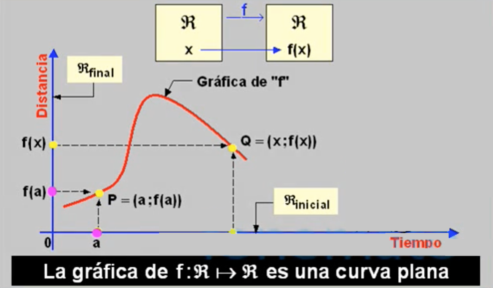
El cociente \(\frac{f(x+h)-f(x)}{(x+h)-x}\)
El cociente \(\frac{f(x+h)-f(x)}{(x+h)-x}\), que es la TASA DE CAMBIO de la funcion \(f: \mathfrak{R}\longmapsto \mathfrak{R}\) si la variable independiente varia desde “x” hasta “x+h”, indica cuantas unidades varia la variable dependiente por cada unidad de variacion de la variable independiente.
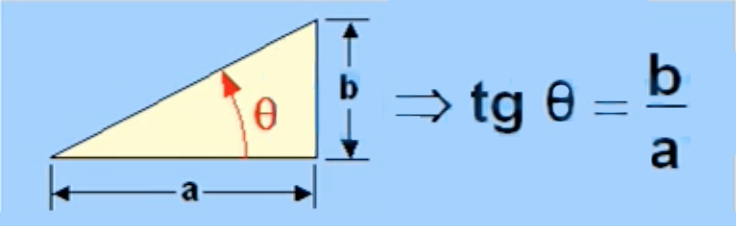
si \(f(x) =x^2\),es:\[ \begin{array}{ll} TC & =\frac{f(x+h)-f(x)}{(x+h)-x}=\frac{(x+h)^2-x^2}{h}\\ &=\frac{2xh+h^2}{h}= 2.x+h \equiv tg(\theta) \end{array} \]
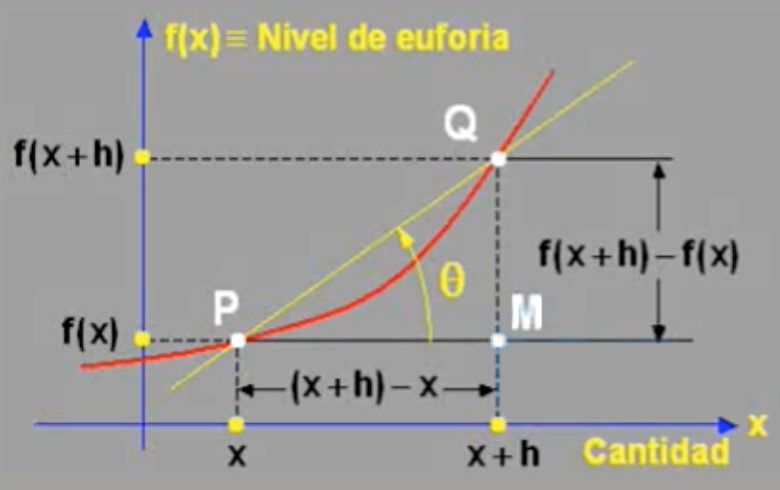
OTRAS NOTACIONES DE FUNCIONES {.scrollable} (6 min)
A veces, trabajando con una función \(f: \mathfrak{R} \longrightarrow \mathfrak{R}\), para abreviar, se denota “y” al número real \(f(x)\) que “f” asocia a “x”.
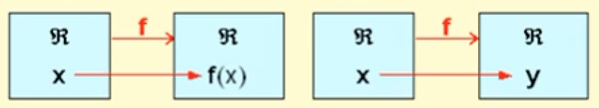
Por ejemplo, en vez de escribir: \[ f(x) = 3x - 1 \quad ; \quad f(x) = x \ln(x) \quad ; \quad f(x) = \sin(x^2) \] se escribe: \[ y = 3x - 1 \quad ; \quad y = x \ln(x) \quad ; \quad y = \sin(x^2) \]
Esta notación no es recomendable para los principiantes, porque con ella es más fácil que se les despiste lo esencial. Y lo esencial ahora es asimilar que tras “f(x)” hay cinco protagonistas: el conjunto \(\mathfrak{R}_{\text{inicial}}\), el \(\mathfrak{R}_{\text{final}}\), la correspondencia \("f"\) que asocia elementos de \(\mathfrak{R}_{\text{inicial}}\) con elementos de \(\mathfrak{R}_{\text{final}}\), el número \(x \in \mathfrak{R}_{\text{inicial}}\), y el número \(f(x) \in \mathfrak{R}_{\text{final}}\) que “f” asocia a “x”. Nuestro cerebro debe ser capaz de estar pendiente de los cinco simultáneamente.
FUNCIONES UNIFORMES {.scrollable} (5 min)
Se dice que la función \(f: \mathfrak{R} \longrightarrow \mathfrak{R}\) es uniforme si cada \(x \in \mathfrak{R}_{\text{inicial}}\) que tiene imagen en \(\mathfrak{R}_{\text{final}}\), tiene una única imagen.
Por ejemplo, la función “f” tal que \(f(x)=1+x^2\) es uniforme, pues cada número real “x” tiene una única imagen.
Por otro lado, la función “g” tal que \((g(x))^2=1+x^2\) no es uniforme, pues \((g(x))^2=1+x^2 \Longrightarrow g(x)=\pm \sqrt{1+x^2}\); o sea, cada número real “x” tiene dos imágenes posibles.
\[g(7)=\pm \sqrt{1+7^2}=\pm \sqrt{50} \quad ;\quad g(4)=\pm \sqrt{1+(-4)^2}=\pm \sqrt{17}\]
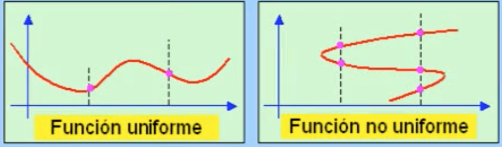
Si la función “f” es uniforme, las paralelas al eje de ordenadas no cortan o cortan en un único punto a la gráfica de “f”.
Si “f” no es uniforme, hay rectas paralelas al eje de ordenadas que cortan a dicha curva en dos o más puntos.
Operaciones con funciones {.scrollable} ()
::: {.bg style=“background-color:#fdf6e3;padding:0.25em; border-left:6px solid #fdf6e3;”} (4.20 min)
\(f = u + v\) es la función tal que \(f(x) = u(x) + v(x)\)
\(f = u \cdot v\) es la función tal que \(f(x) = u(x) \cdot v(x)\)
\(f = \frac{u}{v}\) es la función tal que \(f(x) = \frac{u(x)}{v(x)}\)
\(f = u^v\) es la función tal que \(f(x) = (u(x))^{v(x)}\)
\(f = \sqrt[k]{u}\) es la función tal que \(f(x) = \sqrt[k]{u(x)},\quad k \equiv \text{constante}\)
\(f = \log_k{u}\) es la función tal que \(f(x) = \log_k{u(x)},\quad k > 0 \quad ; \quad k \neq 1\) :::
Por ejemplo, si \(u: \mathfrak{R} \longrightarrow \mathfrak{R}\) y \(v: \mathfrak{R} \longrightarrow \mathfrak{R}\) son tales que \(u(x) = x^2\) y \(v(x) = 5^x\):
\(f = u + v\) es la función tal que \(f(x) = x^2 + 5^x\)
\(f = u \cdot v\) es la función tal que \(f(x) = x^2 \cdot 5^x\)
\(f = \frac{u}{v}\) es la función tal que \(f(x) = \frac{x^2}{5^x}\)
\(f = u^v\) es la función tal que \(f(x) = (x^2)^{5^x}\)
\(f = \sqrt[k]{u}\) es la función tal que \(f(x) = \sqrt[7]{x^2},\quad k \equiv 7\)
\(f = \log_k{u}\) es la función tal que \(f(x) = \log_5{x^2},\quad k = 5\)
LAS RECTAS
La gráfica de la \(f: \mathfrak{R} \longrightarrow \mathfrak{R}\) es una curva plana
Siendo constantes “a” y “b”, la gráfica de toda función \(f: \mathfrak{R} \longrightarrow \mathfrak{R}\) tal que \(f(x) = ax + b\) es una recta no perpendicular al eje de abscisas.
Como \(f(0) = a \cdot 0 + b = b\), la recta corta al eje de ordenadas en el punto “b” (es decir, \(\color{blue}{\text{la ordenada de la recta en el origen}}\)).
La recta corta al eje de abscisas en el punto “x” tal que \(f(x) = 0\):
\[ f(x) = ax + b = 0 \Longrightarrow x = \frac{-b}{a} \]
Al número \(\displaystyle\frac{-b}{a}\) se le llama la abscisa de la recta en el origen.
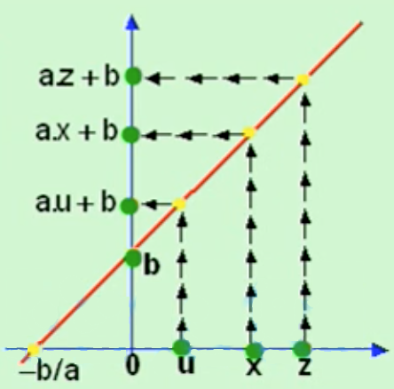
LAS RECTAS
Para dibujar una recta basta posicionar dos puntos de ella
Por ejemplo, para dibujar la recta correspondiente a la \(f: \mathfrak{R} \longrightarrow \mathfrak{R}\) tal que \(f(x)=2+3x\),los novatos posicionan dos puntos cualesquiera de ella: \[ \left\{ \begin{array}{ll} f(1)= 2+3.(1)=5 \Longrightarrow \text{la recta pasa por} \quad P=(1,5) \\ f(2)= 2+3.(2)=8 \Longrightarrow \text{la recta pasa por} \quad Q=(2,8) \\ \end{array} \right. \]
Los que no se chupan el dedo dibujan la recta calculando sus intersecciones con los ejes, pues asi tardan menos: \[ \left\{ \begin{array}{ll} f(0)= 2+3.(0)=2 \Longrightarrow \text{la recta pasa por} \quad (0,2) \\ f(x)= 2+3.(x)=0 \Longrightarrow x=-2/3 \Longrightarrow \text{la recta pasa por} \quad (-2/3,0) \\ \end{array} \right. \]
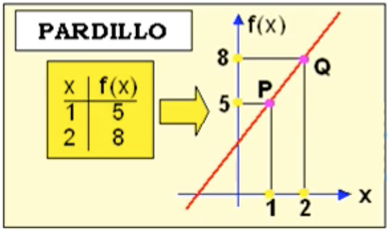
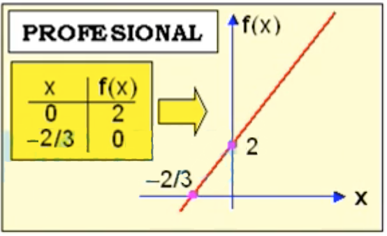
Si \(f(x) = a \cdot x + b\), se dice que “f” es una función lineal
Siendo \(P = (x, f(x))\) un punto genérico de la recta \(f(x) = ax + b\), se cumple:
\[ \Large f(x) - b = a \cdot x \]
Es decir, la diferencia \(f(x) - b\) entre la ordenada “\(f(x)\)” del punto “P” y la ordenada “b” de la recta en el origen es proporcional a la abscisa “x” de “P”.
La constante de proporcionalidad “a” coincide con la tangente del ángulo \(\theta\) que forma la recta con la dirección positiva del eje de abscisas:
\[ f(x) - b = ax \Longrightarrow \frac{f(x) - b}{x} = a = \tan(\theta) \]
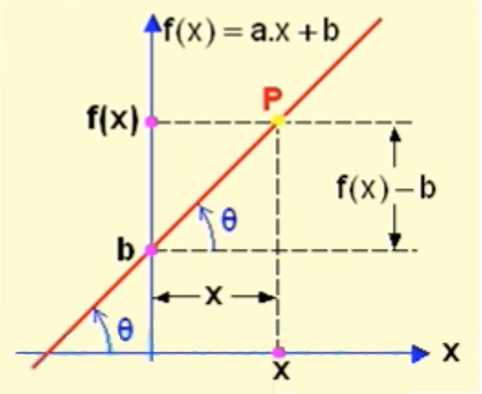
De “\(a\)” se dice que es la pendiente de la recta.
Observa: si \(a = 0 \Longrightarrow \theta = 0 \Longrightarrow\) la recta es paralela al eje de abscisas.
RECTAS
Sea \(f(x) = ax + b\). A la constante “a” se le llama la pendiente de la recta, y representa la tangente del ángulo \(\theta\) que la recta forma con la dirección positiva del eje de abscisas.
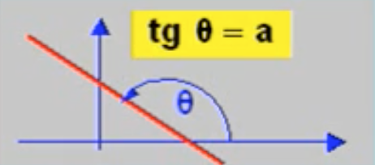
Ejemplo: Si \(f(x) = 5x + 2\), entonces \(f(0) = 2\), que es la ordenada al origen. Como la pendiente es \(5\), la recta forma un ángulo \(\theta\) con la dirección positiva del eje \(x\) tal que:\(\tan(\theta) = 5 \quad \Rightarrow \quad \theta = \arctan(5) \approx 78.69^\circ\)
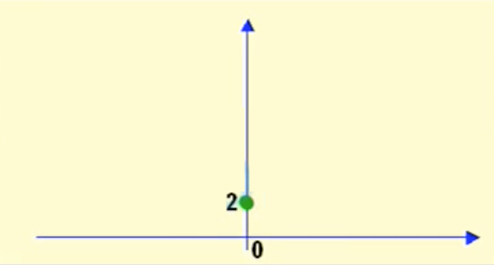
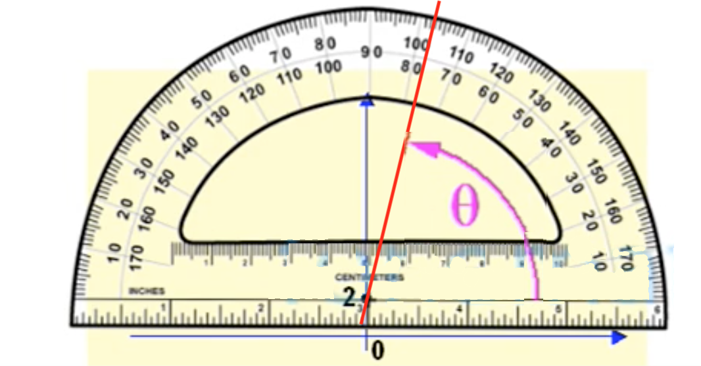
RECTAS
Sea \(f(x) = ax + b\). A la constante “a” se le llama la pendiente de la recta, y representa la tangente del ángulo \(\theta\) que la recta forma con la dirección positiva del eje de abscisas.
Ejemplo: Si \(f(x) = -3x + 4\), es \(f(0) = 4\). Como la pendiente es \(-3\), la recta forma un ángulo \(\theta\) con la dirección positiva del eje abcisas un angulo \(\tan(\theta)\) cuya tangente es “\(-3\)”; o sea; \(\theta=arctan(-3)=108.43^{\circ}\)
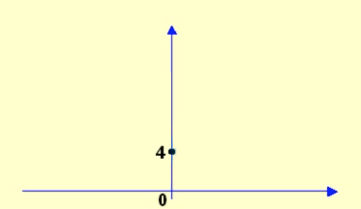
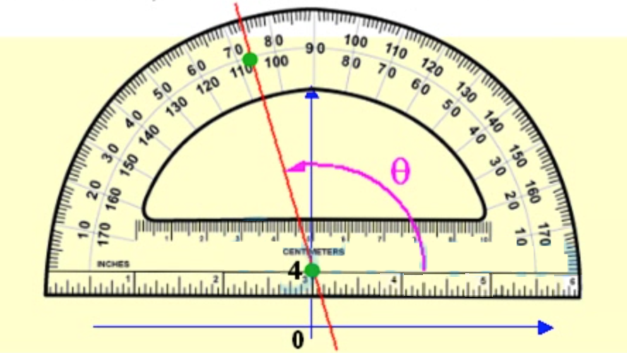
RECTAS
Sea \(f(x) = ax + b\). A la constante “a” se le llama la pendiente de la recta, y representa la tangente del ángulo \(\theta\) que la recta forma con la dirección positiva del eje de abscisas.
Ejemplo: Si \(f(x) = -3x + 4\), es \(f(0) = 4\). Como la pendiente es \(-3\), la recta forma un ángulo \(\theta\) con la dirección positiva del eje abcisas un angulo \(\tan(\theta)\) cuya tangente es “\(-3\)”; o sea; \(\theta=arctan(-3)=108.43^{\circ}\)
RECTAS
Sea \(f(x) = ax + b\). A la constante “a” se le llama la pendiente de la recta, y representa la tangente del ángulo \(\theta\) que la recta forma con la dirección positiva del eje de abscisas.
Ejemplo: Si \(f(x) = 3\), es \(f(0) = 3\). Como la pendiente es \(0\), la recta paralela al eje de la abcisas.
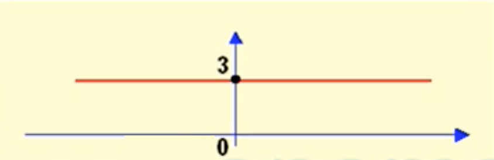
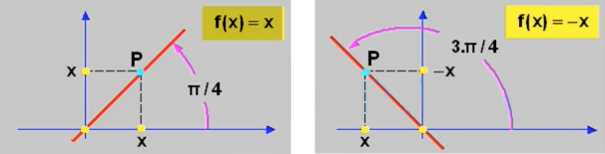
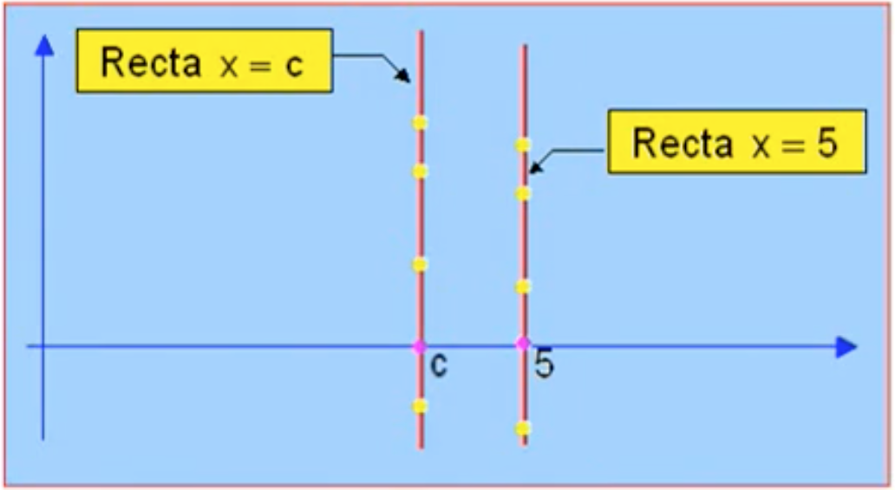
RECTA QUE PASA POR DOS PUNTOS CONOCIDOS
Sea \(f: \mathfrak{R} \longrightarrow \mathfrak{R}\) la función cuya grafica es la recta que pasa por los puntos \(M=(c_0, d_0)\) y \(N=(c_1, d_1)\) y \(P=(x,f(x))\) es un punto genérico de la recta.
De la figura, por la semejanza de los triangulos se tiene que MTN y MSP, resulta:
\[ \frac{MS}{MT} = \frac{PS}{NT} \] o sea:
\[ \frac{x_0 - c_0}{c_1 - c_0} = \frac{f(x) - d_0}{d_1 - d_0} \]
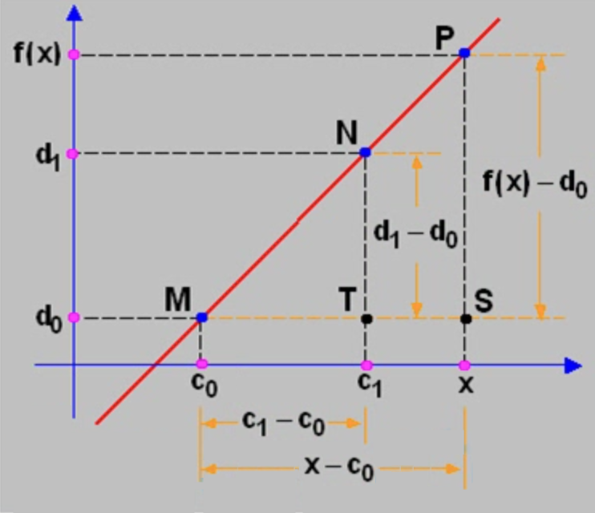
RECTA QUE PASA POR DOS PUNTOS CONOCIDOS (Ejemplos)
RECETA: Para la función cuya gráfica es la recta que pasa por los puntos \((M=(c_0, d_0))\) y \((N=(c_1, d_1))\) es:
\[ \frac{x - c_0}{c_1 - c_0} =\frac{f(x) - d_0}{d_1 - d_0} \]
Por ejemplo: la recta \(f: \mathfrak{R} \longrightarrow \mathfrak{R}\) que pasa por los puntos \(M=(-4, -1)\) y \(N=(2, -3)\) es: \[ \left. \begin{array}{l} \displaystyle \frac{x - (-4)}{2 - (-4)} = \frac{f(x) - (-1)}{-3 - (-1)} \\ \end{array} \right. \Longrightarrow f(x) = -\frac{1}{3}x - \frac{7}{3} \]
RECTA QUE PASA POR DOS PUNTOS CONOCIDOS (Ejemplo2)
RECETA: Para la función cuya gráfica es la recta que pasa por los puntos \((M=(c_0, d_0))\) y \((N=(c_1, d_1))\) es:
\[ \frac{x - c_0}{c_1 - c_0} =\frac{f(x) - d_0}{d_1 - d_0} \]
Por ejemplo: la recta \(f: \mathfrak{R} \longrightarrow \mathfrak{R}\) que pasa por los puntos \(M=(3, 1)\) y \(N=(7, 5)\) es: \[ \left. \begin{array}{l} \displaystyle \frac{x - (3)}{7 - (3)} = \frac{f(x) - (1)}{5 - (1)} \\ \end{array} \right. \Longrightarrow f(x) = x - 2 \]
De todos modos: si \(f(x)0 ax+b\) es la ercta buscada, determinaremos \("a"\) y \("b"\) al exigir que la recta pase por los puntos \(M=(3, 1)\) y \(N=(7, 5)\).
\[ \left. \begin{array}{ll} \displaystyle f(x)=1 \longrightarrow 3.a + b = 1 \\ \displaystyle f(x)=1 \longrightarrow 7.a + b = 5 \end{array} \right\} \Longrightarrow \left\{ \begin{array}{l} a = 1 \\ b = -2 \end{array} \right\} \longrightarrow f(x) = x - 2 \]
RECTA QUE PASA POR DOS PUNTOS CONOCIDOS (Ejemplo 2. continuación)
Si \((x, f(x))\) son las coordenadas de un punto genérico, de la recta pasa por los puntos \((3, 1)\) y \((7, 5)\) de la figura, por semejanza de triangulos, resulta que:
\[ \frac{x - 3}{7 - 3} = \frac{f(x) - 1}{5 - 1} \]
De donde se obtine:
\[f(x) = x - 2\]
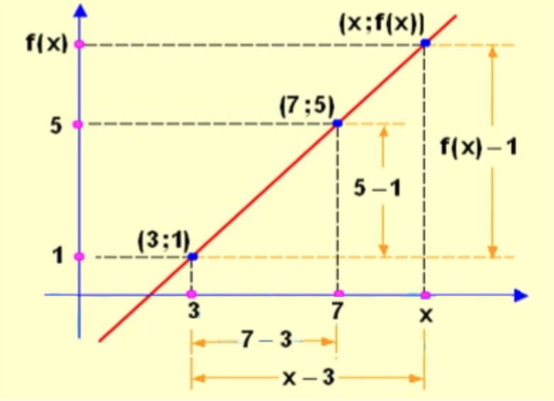
RECTA (Ejemplo 3. ¡Como para examen!) (16 min)
Un vendedor de ilusiones sabe que si un día el precio es de \(2\) euros/kilo, vende 12 kilos; y si el precio es de \(5\) euros/kilo, vende 8 kilos. Haga una estimación lineal de la cantidad vendida si el precio hoy es de \(3\) euros/kilo. Si un día quiere vender 9 kilos, ¿qué precio a de fijar?
Como de Precio \(\overset{f}\longrightarrow\) Cantidad sólo sabemos que \(f(2)=12\) y \(f(5)=8\), entonces es imposible conocer \(f(3)=?\). Estimaciones lineales \(\Longrightarrow\) consideremos que Precio \(\overset{f}\longrightarrow\) Cantidad es la recta que pasa por los puntos \((2, 12)\) y \((5, 8)\), por lo que: \[ \left. \begin{array}{l} \displaystyle \frac{x - (2)}{5 - (2)} = \frac{f(x) - (12)}{8 - (12)} \\ \end{array} \right. \Longrightarrow f(x) = -\frac{4}{3}x + \frac{44}{3}\Longrightarrow f(\color{red}{3}) = -\frac{4}{3}(\color{red}{3}) + \frac{44}{3} = \color{red}{\frac{32}{3}} \, \color{red}{\text{kilos}} \]
Observación: Más allá del resultado puntual, fíjate bien: las rectas nos han salvado la vida. Recuerda que es imposible conocer el valor de \(f(3)\) sin asumir que \(f\) es la recta que pasa por los puntos \((2,12)\) y \((5,8)\). Solo bajo esa suposición, podemos extender razonadamente el comportamiento de la función.
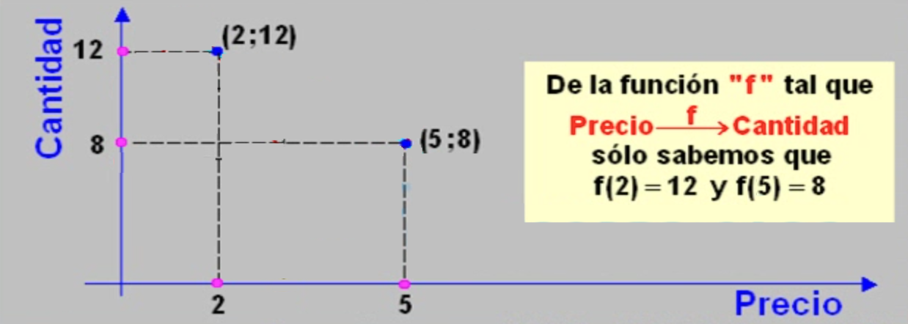
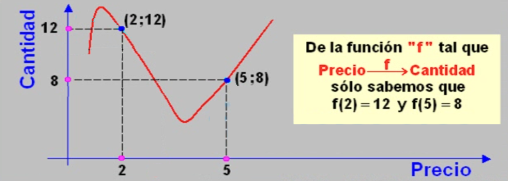
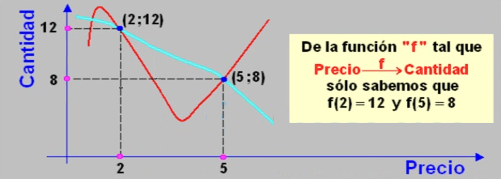
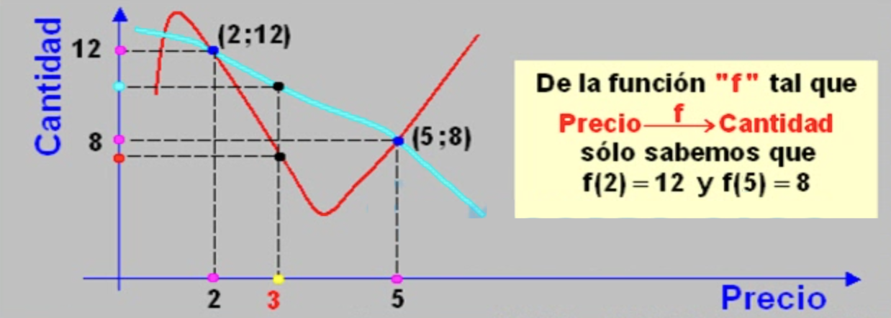
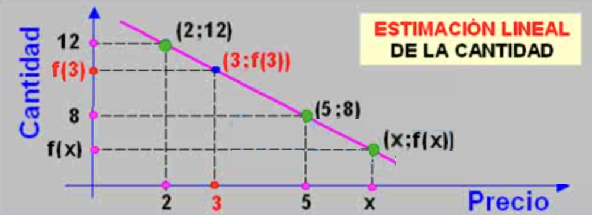
RECTA (Ejemplo 3 continuación. ¡Como para examen!)
Un vendedor de ilusiones sabe que si un día el precio es de \(2\) euros/kilo, vende 12 kilos; y si el precio es de \(5\) euros/kilo, vende 8 kilos. Haga una estimación lineal de la cantidad vendida si el precio hoy es de \(3\) euros/kilo. Si un día quiere vender 9 kilos, ¿qué precio a de fijar?
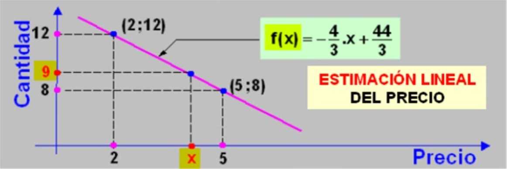
\[ \left. f(x)=9 \right. \Longrightarrow f(\color{red}{x}) = -\frac{4}{3}(\color{red}{x}) + \frac{44}{3} =9 \Longrightarrow x=\color{red}{\frac{17}{4}} \, \color{red}{\text{euros/kilos}} \]
RECTA QUE PASA POR POR UN PUNTO CONOCIDO CON PENDIENTE CONOCIDA
Sea \(f: \mathfrak{R} \longrightarrow \mathfrak{R}\) la función cuya grafica es la recta que pasa por el punto \(M=(c_0, d_0)\) con pendiente \("a"\). Sea \(P=(x,f(x))\) un punto generico de la recta.
De la figura, se deduce que:
\[ \tan \theta =\frac{f(x)-d_0}{x-c_0} \] \[ \color{red}{\Longrightarrow f(x)=d_0+a(x-c_0)} \]
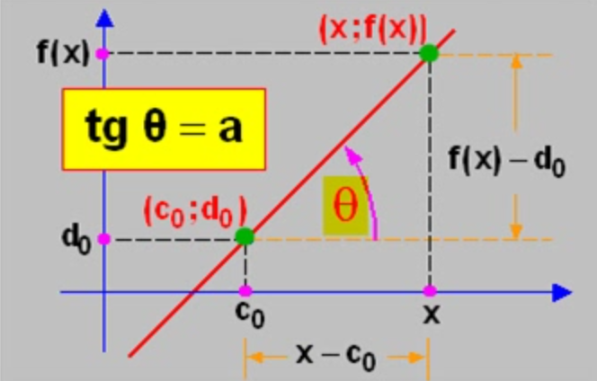
Por ejemplo, la recta que pasa por el punto \((6,-4)\) con pendiente \(3\) es \(f(x)=-4+3(x-6)=3x+22\).
Por ejemplo, la recta que pasa por el punto \((-5,7)\) con pendiente \(-4\) es \(f(x)=7-4(x-(-5))=-4x-13\).
RECTA QUE PASA POR POR UN PUNTO CONOCIDO CON PENDIENTE CONOCIDA
Sea \(f: \mathfrak{R} \longrightarrow \mathfrak{R}\) la función cuya gráfica es la recta que pasa por el punto \(M=(c_0, d_0)\) con pendiente \("a"\). Sea \(P=(x,f(x))\) un punto genérico de la recta.
De la figura, se deduce que:
\[ \tan \theta =\frac{f(x)-d_0}{x-c_0} \] \[ \color{red}{\Longrightarrow f(x)=d_0+a(x-c_0)} \]
Por ejemplo, la recta que pasa por el punto \((6,2)\) con pendiente \(0\) es: \[f(x)=2+0(x-6)=2\]
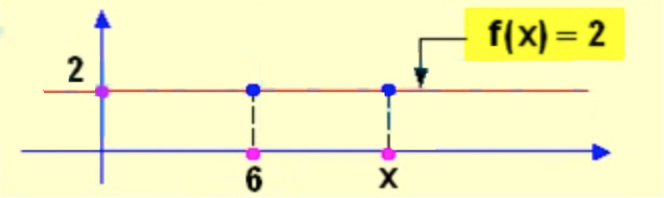
LA RECTA CON OTRAS NOTACIONES
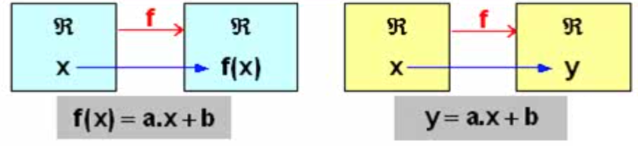
Por ejemplo: Si \(3y-\sqrt{3}x=12\), despejando “y”, es \(y=\frac{\sqrt{3}}{3}x+4\).
La ordenada en el origen es “4” \((x=0 \longrightarrow y=4)\) y la pendiente es \(\frac{\sqrt{3}}{3}\): la recta forma con la dirección positiva del eje de abscisas un ángulo \(\theta\) cuya tangente es \(\frac{\sqrt{3}}{3}\), por lo que \(\theta= \arctan \frac{\sqrt{3}}{3}\).
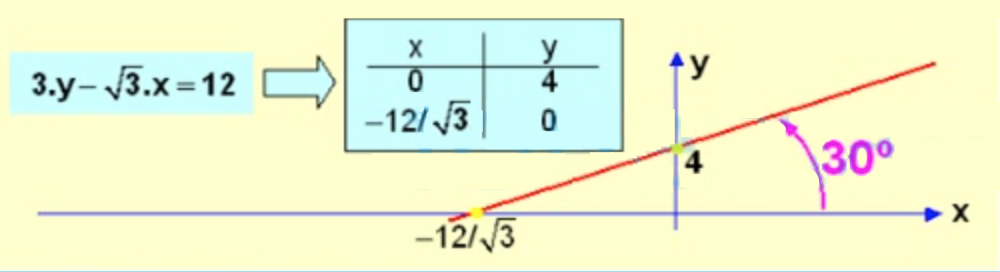
LA RECTA CON OTRAS NOTACIONES
Receta: Para una función \(f\) cuya gráfica es la recta que pasa por los puntos \((c_0,d_0)\) y \((c_1,d_1)\), se cumple:
\[\frac{x - c_0}{c_1 - c_0} = \frac{f(x) - d_0}{d_1 - d_0}\]
Ejemplo: La recta que pasa por los puntos \((5,7)\) y \((8,9)\) se obtiene así:
\[ \left. \begin{array}{l} \displaystyle \frac{x - 5}{8 - 5} = \frac{y - 7}{9 - 7} \end{array} \right. \Longrightarrow y = \frac{2}{3}x + \frac{11}{3} \]
LA RECTA CON OTRAS NOTACIONES
Receta: Para una función \(f\) cuya gráfica es la recta que pasa por el punto \(M(c_0,d_0)\) con pendiente “a”, es:
\[f(x)=d_0+a(x-c_0)\]
Ejemplo: La recta que pasa por el punto \((6,-4\)) con pendiente 3:
\[ y = -4 +3(x-6)=3x-22 \]
PARALELISMO Y PERPENDICULARIDAD DE LAS RECTAS (10 min)
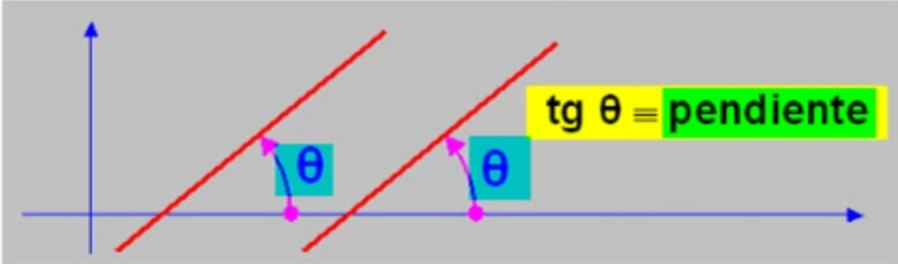
PARALELISMO Y PERPENDICULARIDAD DE LAS RECTAS (Ejemplos)
Por ejemplo, las rectas \(y=3x-7\) e \(y=3x+5\) son paralelas, pues ambas tienen pendiente 3.
Por ejemplo, las rectas \(y=5x-2\) e \(y=2x+1\) no son paralelas, pues no tienen igual pendiente.
Por ejemplo, las rectas \(2y=4x-3\) e \(y=2x+9\) son paralelas, pues no ambas tienen pendiente 2. \[ 2y=4x-3 \, \Longrightarrow \, y=2x-\frac{3}{2} \]
PARALELISMO Y PERPENDICULARIDAD DE LAS RECTAS
Receta:
Recta que pasa por el punto \(M(c_0,d_0)\) con pendiente “a”, es: \(f(x)=d_0+a(x-c_0)\)
Por ejemplo, la recta que pasa por el punto \(M(2,3)\) y es paralela a la recta \(y=5x+7\) es: \(y=3x+5(x-2)\)
Por ejemplo, la recta que pasa por el punto \(M(9,4)\) y es paralela a la recta que pasa por los puntos \(N(1,2)\) y \(S(6,5)\) es:
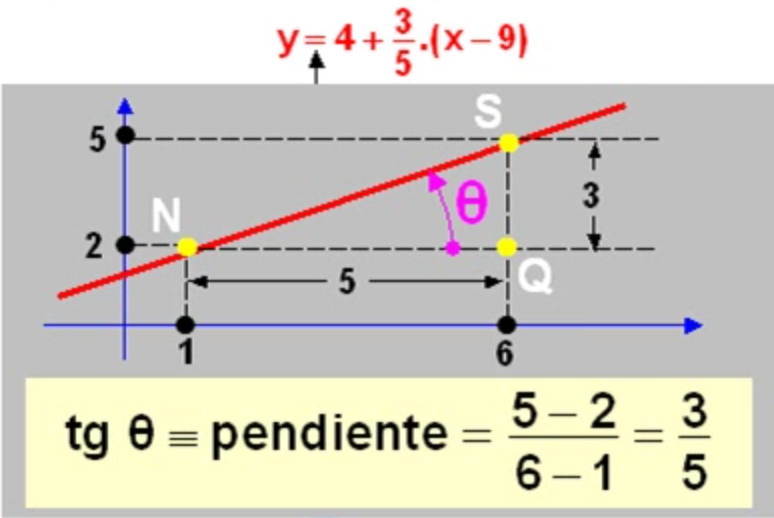
PARALELISMO Y PERPENDICULARIDAD DE LAS RECTAS
Tarea:
Por ejemplo, la recta que pasa por el punto \(M(9,4)\) y es paralela a la recta que pasa por los puntos \(N(1,5)\) y \(S(6,2)\).
PARALELISMO Y PERPENDICULARIDAD DE LAS RECTAS
Perpendicularidad:
Dos rectas son perpendiculares solo si el producto de sus respectivas pendientes es -1. \[ m_1 \cdot m_2 = -1 \]
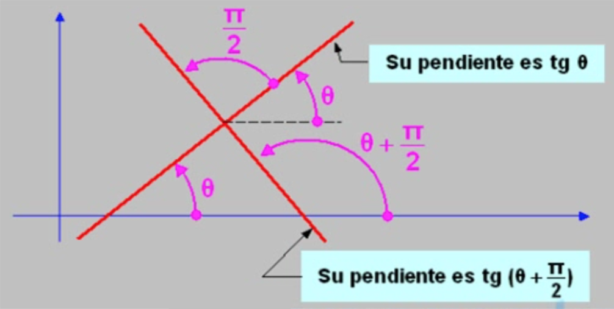
\[ \tan(\theta+\frac{\pi}{2})=\frac{sin(\theta+\frac{\pi}{2})}{\cos(\theta+\frac{\pi}{2})}=\frac{cos(\theta)}{-sin(\theta)}=\frac{1}{\tan(\theta)} \Longrightarrow (\tan(\theta)). (\tan(\theta+\frac{\pi}{2})) \]
PARALELISMO Y PERPENDICULARIDAD DE LAS RECTAS
Perpendicularidad:
Dos rectas son perpendiculares solo si el producto de sus respectivas pendientes es -1. \[ m_1 \cdot m_2 = -1 \]
Por ejemplo, la recta que pasa por el punto \(M=(2,3)\) y es perpendicular a la recta \(y=5x-7\) es: \[ \color{red}{y=3+(-\frac{1}{5}).(x-2)} \].
Por ejemplo, la recta que pasa por el punto \(M=(9,4)\) y es perpendicular a la recta que pasa por los puntos \(N=(2,0)\) y \(S=(3,-6)\) es:
La pendiente de la recta que pasa por los puntos:
\[ \frac{(-6)-0}{3-2} = -6 \equiv \frac{\text{Diferencia de ordenadas}}{\text{Diferencia de abscisas}} \]
entonces: \[ \left. \begin{array}{lll} m_1 \cdot m_2 & = &-1 \\ -6 \cdot m_2 & = &-1 \\ m_2 & = &\frac{1}{6} \end{array} \right. \Longrightarrow \color{red}{y=4+\frac{1}{6}(x-9)} \]
LA PARABOLA (3:13 min)
Sea \(a \neq 0\) y \(a, b, c\) constantes. Si \(f(x) = ax^2 + bx + c\), entonces la gráfica de \(f\) es una parábola de eje vertical.
- Si \(a > 0\), la parábola abre hacia arriba.
- Si \(a < 0\), la parábola abre hacia abajo.
Ecuacion 2do grado\[ax^2+bx+c=0 \, \Longrightarrow x=\frac{-b \pm \sqrt{b^2-4ac}}{2a}\]
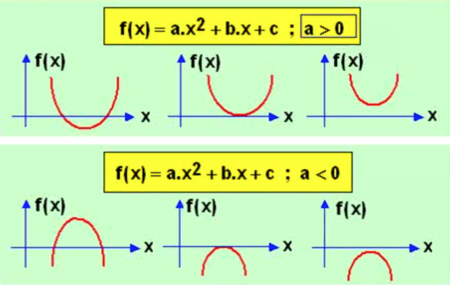
LA PARABOLA (Ejemplos 7:07 min )
Determine la parabola que pasa por (0,3), (1,2), y (2,3)
Determine la parabola que pasa por (1,-1), (3,1), y (0,-2)
Determine la parabola que pasa por (0,1), (1,1), (2,3) y (3,7)
Determine la parabola que pasa por (0,0), (1,2), (2,3) y (3,0)
Supongamos el problema resuelto:
Sea \(f(x)=ax^2+bx+c\) la parabola buscada.
Determinamos “a”, “b” y “c” al exigir que pase por los puntos dados.
\[ \left. \begin{array}{ll} f(0)=3 \Longrightarrow a.0^2+b.0+c=3 \\ f(1)=2 \Longrightarrow a.1^2+b.1+c=2 \\ f(2)=3 \Longrightarrow a.2^2+b.2+c=3 \end{array} \right\} \Longrightarrow \left\{ \begin{array}{ll} a=1 \\ b=-2 \\ c=3 \end{array} \right\}\Longrightarrow f(x)=x^2-2x+3 \]
FUNCION VALOR ABSOLUTO (7:35 min)
El valor absoluto de un número real ( x ) es el número real no negativo que denotamos como ( |x| ) y se define de la siguiente manera: \(|x| =\left\{\begin{array}{ll}x & \text{si }x \geq 0 \\-x & \text{si } x < 0\end{array}\right.\)
Algunos ejemplos:
- Como \(5 > 0\), se tiene que \(|5| = 5\). Como \(-7 < 0\), entonces \(|-7| = -(-7) = 7\).
También podemos expresar funciones valor absoluto como funciones a trozos:
\[ f(x) = |u(x)| = \left\{ \begin{array}{ll} u(x) & \text{si } u(x) \geq 0 \\ - u(x) & \text{si } u(x) < 0 \end{array} \right. \]
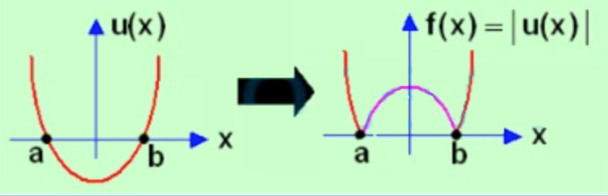
FUNCION VALOR ABSOLUTO (Ejemplos) (10min)
Representar la grafica de \(f:\mathfrak{R} \longrightarrow \mathfrak{R}\) en los siguientes casos.
\(1) f(x)=|x-2| \quad 2) f(x)=|9-3x| \quad 3) f(x)=|x^2-6x+5|\)
FUNCIONES A TROZOS (15 min)
EL CÍRCULO GONIOMÉTRICO
RECUERDA
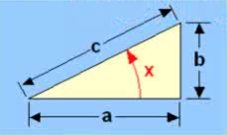
Para el ángulo “x”, es:
\(\sin^2 x + \cos^2 x = 1\)
\[ \left\{ \begin{array}{ll} \sin x = \dfrac{\text{cateto opuesto}}{\text{hipotenusa}} = \dfrac{b}{c} \\ \cos x = \dfrac{\text{cateto adyacente}}{\text{hipotenusa}} = \dfrac{a}{c} \\ \tan x = \dfrac{\sin x}{\cos x} = \dfrac{b}{a} \\ \cot x = \dfrac{\cos x}{\sin x} = \dfrac{a}{b} \\ \sec x = \dfrac{1}{\cos x} = \dfrac{c}{a} \\ \csc x = \dfrac{1}{\sin x} = \dfrac{c}{b} \end{array} \right. \]
EL CÍRCULO GONIOMÉTRICO
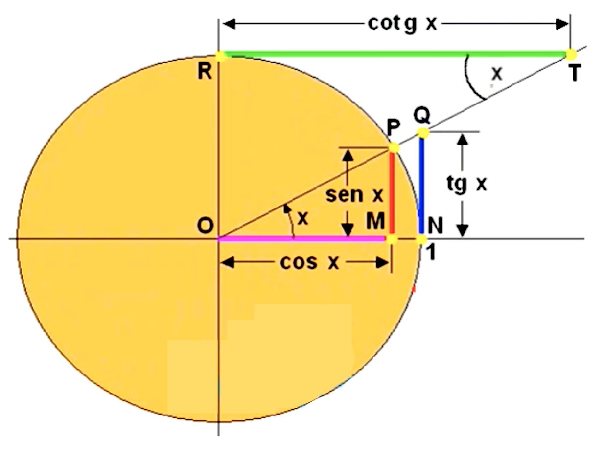
\[ \text{En} \, OPM: \left\{ \begin{array}{ll} \sin x = \frac{PM}{OP} = \color{red}{PM} \\ \cos x = \frac{OM}{OP} = \color{magenta}{OM} \end{array} \right. \]
\[ \text{En} \, OQN: \left\{ \begin{array}{ll} \tan x = \frac{QN}{ON} = \color{blue}{QN} \\ \end{array} \right. \]
\[ \text{En} \, ORT: \left\{ \begin{array}{ll} \cot x = \frac{RT}{OR} = \color{green}{RT} \\ \end{array} \right. \]
Los ángulos siempre se miden en radianes: un radián es el ángulo tal que la longitud del arco PS coincide con el radio de la circunferencia.
Los 360 grados de la circunferencia corresponden a \(2\pi\) radianes; así, expresado en grados, un radián equivale a \(\frac{360}{2\pi} \approx 57.29578\) grados.
EL CÍRCULO GONIOMÉTRICO
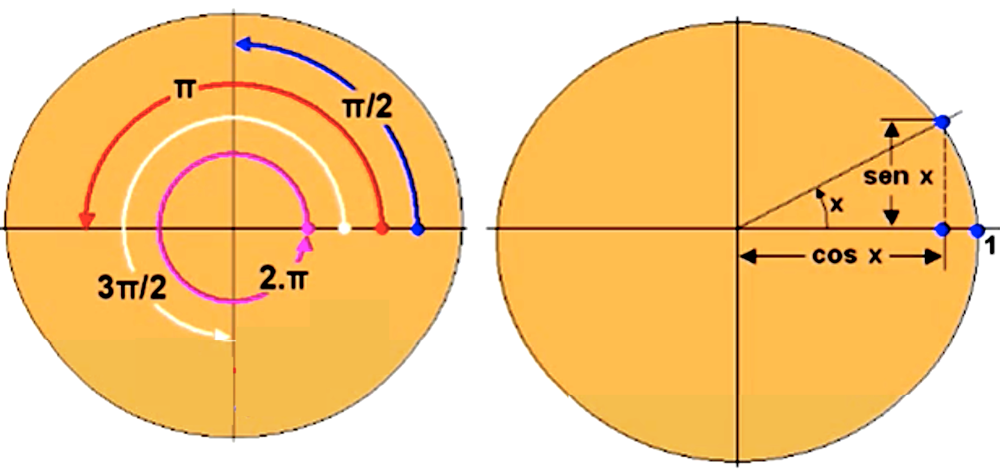
Las funciones trigonométricas cambian de signo según el cuadrante del ángulo. En el primer cuadrante, todas son positivas. En el segundo, solo el seno lo es; en el tercero, la tangente y cotangente; y en el cuarto, el coseno y la secante. Este patrón se recuerda con la frase “Todos sin tacos”.
| Grados | 0 | 30 | 45 | 60 | 90 | 180 | 270 | 360 |
|---|---|---|---|---|---|---|---|---|
| Radianes | \(0\) | \(\frac{\pi}{6}\) | \(\frac{\pi}{4}\) | \(\frac{\pi}{3}\) | \(\frac{\pi}{2}\) | \(\pi\) | \(\frac{3\pi}{2}\) | \(2\pi\) |
| Seno | \(0\) | \(\frac{1}{2}\) | \(\frac{\sqrt{2}}{2}\) | \(\frac{\sqrt{3}}{2}\) | \(1\) | \(0\) | \(-1\) | \(0\) |
| Coseno | \(1\) | \(\frac{\sqrt{3}}{2}\) | \(\frac{\sqrt{2}}{2}\) | \(\frac{1}{2}\) | \(0\) | \(-1\) | \(0\) | \(1\) |
Gráfico de la Función Seno

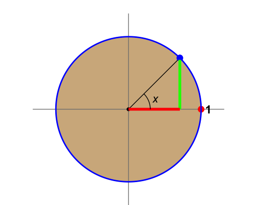
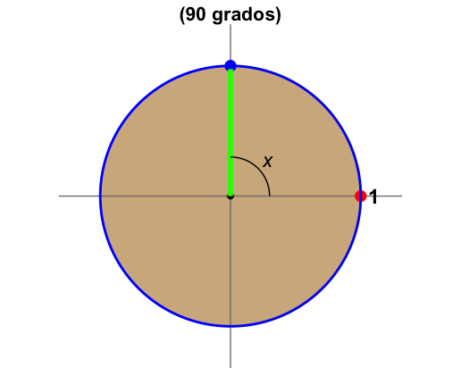
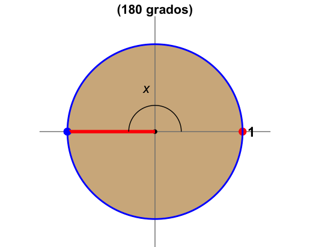
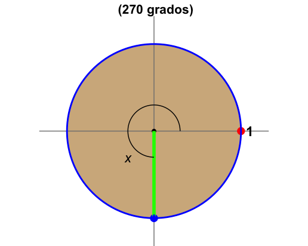
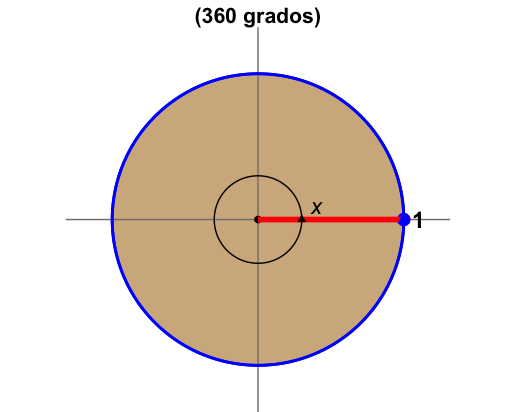
DOMINIO DE DEFINICION DE UNA FUNCION (8 min)
El dominio de definición de la \(f:\mathfrak{R} \longrightarrow \mathfrak{R}\) se denota Dom(f), y es el subconjunto de \(\mathfrak{R}_{inicial}\) formado por los puntos a los que \(f\) les asigna imagen en \(\mathfrak{R}_{final}\):
\[ Dom(f)= \{ x\in \mathfrak{R} \;| \;f(x)\in \mathfrak{R}\} \]
Si \(f(a) \in \mathfrak{R}\) se dice que \(f\) esta definida en el punto \("a"\), y si \(f(a) \notin \mathfrak{R}\) se dice que \("f"\) no está definida en “a”.
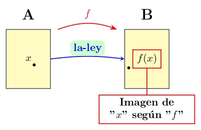
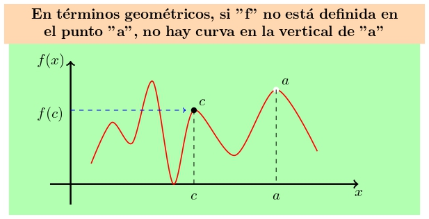
Una función real de variable real \(f:A \subset \mathfrak{R} \rightarrow \mathfrak{R}\) es una regla que asigna a cada elemento de un primer conjunto \(A\), un único elemento de un segundo conjunto \(\mathfrak{R}\). Las funciones son relaciones entre los elementos de dos conjuntos.
Se llama dominio de la función \(f\) al conjunto de valores para los cuales la misma está definida
\[Dom\ (f) = A = \{x\in \mathbb R| \exists! y \in \mathbb R: f(x)=y\}\] El conjunto de todos los resultados posibles de una función dada se denomina rango, imagen o codominio de esa función.
\[Im\ (f) = \{y\in \mathbb R| \exists x \in \mathbb R: f(x)=y\}\]
RECORDATORIO DE LOS LOGARITMOS (12.2 min)
Se dice que el numero real “a” es el logaritmo de base “k” (\(k>0,\quad k \neq 1\)) del numero real positivo “b”, y se escribe \(\log_k b=a\), si \(k^a=b\)
\[\log_k b=a \quad \Longleftrightarrow k^a=b\]
\(\log_2 8=3\), pues \(2^3=8\)
\(\log_5 25=2\), pues \(5^2=25\)
\(\log_{0.7} 0.49=2\), pues \(0.7^2=0.49\)
\(\log_{2} (x-4)=5, \longrightarrow x-4=2^{5} \longrightarrow x=4+2^{5}=36\)
\(\log_{2} (x-4)=-5, \longrightarrow x-4=2^{-5} \longrightarrow x=4+2^{-5}=\frac{129}{32}\)
\(\log_{4} (x^2-9)=2, \longrightarrow x^2-9=4^2\longrightarrow x^2=25\longrightarrow x= \pm 5\)
RECORDATORIO DE LOS LOGARITMOS
Se dice que el numero real “a” es el logaritmo de base “k” (\(k>0,\quad k \neq 1\)) del numero real positivo “b”, y se escribe \(\log_k b=a\), si \(k^a=b\)
\[\log_k b=a \quad \Longleftrightarrow k^a=b\]
- Si la base es 10, se dice que el logaritmo es decimal
- Si la base es \(e \approx 2.718281828\), se dice que el logaritmo es neperiano, y se denota Ln
\[\ln_e b = a \quad \Longleftrightarrow e^a=b\]
\[ \begin{array}{ll} (1+\frac{1}{1})^1\quad;(1+\frac{1}{2})^2\quad;(1+\frac{1}{3})^3 \quad;(1+\frac{1}{4})^4 \quad;(1+\frac{1}{5})^5 \quad;(1+\frac{1}{6})^6 \quad;\\ (1+\frac{1}{7})^7\quad;(1+\frac{1}{8})^8\quad;(1+\frac{1}{9})^9\quad;\cdots \longrightarrow e \end{array} \]
PROPIEDADES DE LOS LOGARITMOS
\(\log_k 1 = 0\)
\(\log_k k = 1\)
\(\log_k k^c = c\)
\(\log_k b^c = c \cdot \log_k b\)
\(\log_k (m \cdot n) = \log_k m + \log_k n\)
\(\log_k \left(\dfrac{m}{n}\right) = \log_k m - \log_k n\)
Cambio de base:
\(\log_{k_1} m = \dfrac{\log_{k_2} m}{\log_{k_2} k_1}\)Comportamiento en \(0^+\):
\[ \log_k 0^+ = \left\{ \begin{array}{ll} +\infty & \text{si } 0 < k < 1 \\ -\infty & \text{si } k > 1 \end{array} \right. \]
🔎 Al escribir \(0^+\), nos referimos a un número muy próximo a cero pero positivo.
Es decir:
- Si un número positivo es extremadamente pequeño, su logaritmo:
- tiende a \(+\infty\) si la base \(k\) está entre \(0\) y \(1\);
- tiende a \(-\infty\) si la base \(k\) es mayor que \(1\).
FUNCIONES ALGEBRAICAS Y TRASCENDENTES {.scrollable} ()
Se dice que \(f : \mathfrak{R} \to \mathfrak{R}\) es una función algebraica si las operaciones que deben realizarse para calcular el número \(f(x)\) son algebraicas: suma, resta, multiplicación, división, potenciación con exponentes constantes, radicación con índice constante.
Se dice que “f” es trascendente si no es algebraica.
Por ejemplo, son algebraicas las funciones tales que: \[ f(x)=x^3-3x \quad; \quad f(x)=\frac{x^2+x}{x-1}\quad; \quad f(x)=\frac{x+\sqrt{x}}{1-\sqrt[5]{2+x}} \]
pues las operaciones para calcular “f(x)” son las algebraicas: suma, resta, multiplicación, división, potenciación con exponentes constantes, radicación con índice constante
Por ejemplo, son trascendentes las funciones tales que: \[ f(x)=2^{3x+1} \quad; \quad f(x)=\log_6 (x+1) \quad; \quad f(x)=\sin(x^2) \]
Gráficos de funciones algebraicas (6 min)
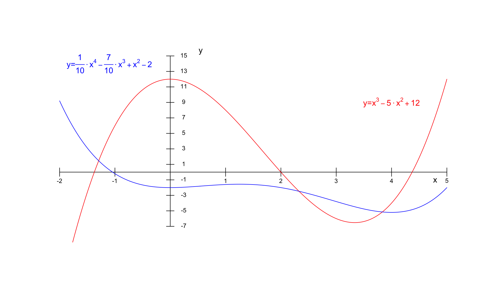
Funciones potenciales (6 min)
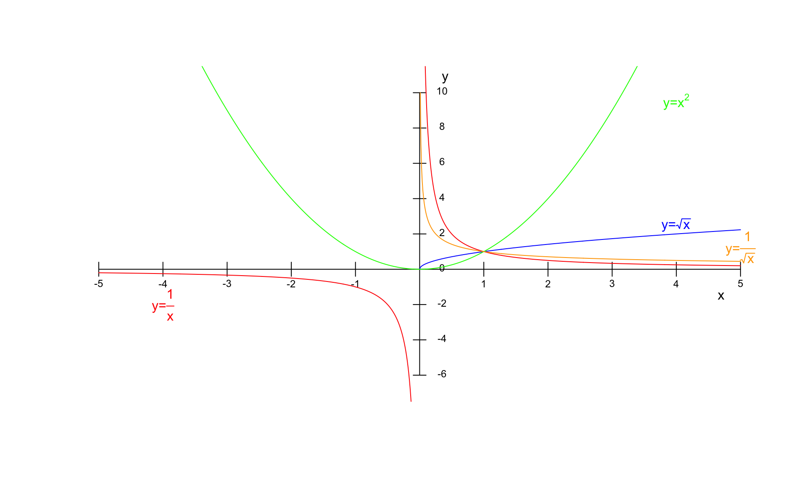
Funciones exponenciales (6 min)
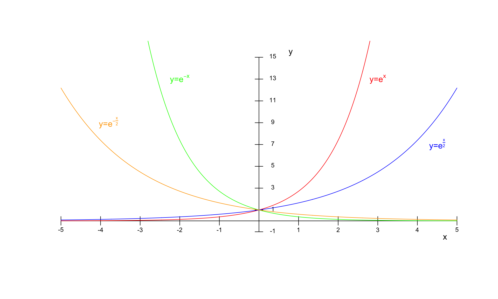
Funciones logarítmicas (6 min)

Funciones trigonométricas (6min)

Funciones trigonométricas
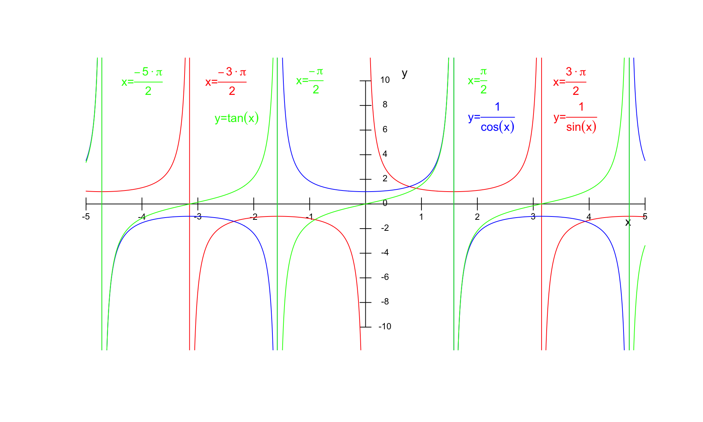
Funciones trigonométricas

Funciones trigonométricas

SIMETRIAS DE FUNCIONES (15 min)
Se dice que \(f:\mathfrak{R} \longrightarrow \mathfrak{R}\) es par si \(f(-x)=f(x)\) asi, la grafica de “f” es simetrica respecto el eje de ordenadas.
Se dice que \(f:\mathfrak{R} \longrightarrow \mathfrak{R}\) es impar si \(f(-x)=-f(x)\) asi, la grafica de “f” es simetrica respecto al origen de coordenadas.
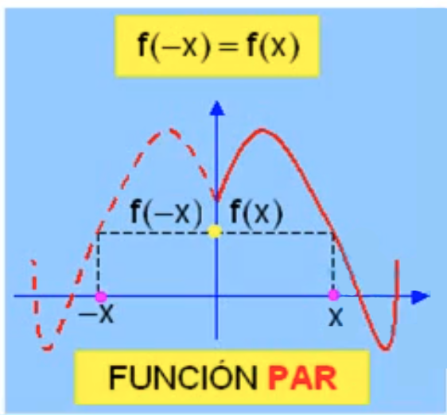
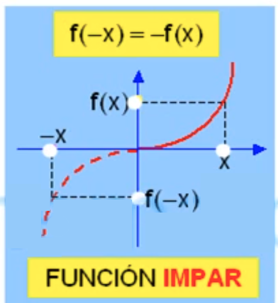
El que \(f:\mathfrak{R} \longrightarrow \mathfrak{R}\) sea par o impar es estupendo, pues en tal caso solo nos preocupará dibujar su gráfica si \(x \geq 0\), ya que lo que sucede si \(x < 0\) lo deducimos por simetría.
SIMETRIAS DE FUNCIONES (Ejemplos) (15 min)
COMPOSICION DE FUNCIONES (6 min)
COMPOSICION DE FUNCIONES (Ejemplos) (12 min)
© 2025 Elvis Sánchez – Universidad Técnica de Machala